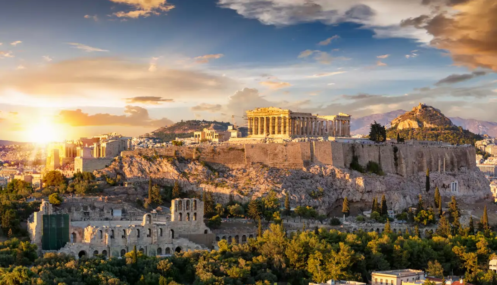
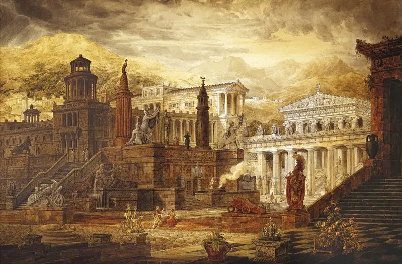
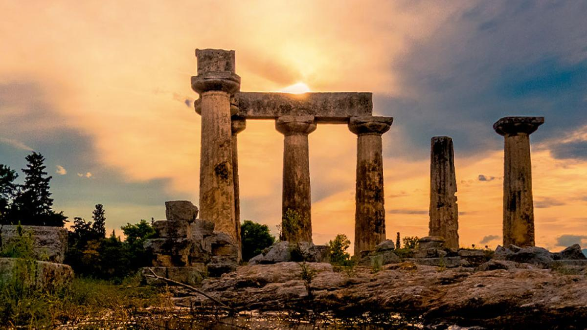

¿Que fue este perido?
La Época Arcaica de la Antigua Grecia (aproximadamente 800-500 a.C.) fue un período de transformación y crecimiento que sentó las bases de la civilización griega clásica. Durante esta etapa, Grecia pasó de ser un conjunto de comunidades aisladas a una sociedad organizada en polis (ciudades-estado), desarrolló su sistema político, expandió su influencia por el Mediterráneo y comenzó a definir su identidad cultural.
Surgimiento de las polis
Las polis fueron el núcleo de la sociedad griega. Cada ciudad-estado tenía su propio gobierno, leyes y ejército, aunque compartían lengua, religión y costumbres. Algunas de las más importantes fueron:
Atenas
Atenas en la Edad Arcaica fue un laboratorio político y cultural donde las tensiones sociales, los conflictos aristocráticos y las reformas legales sentaron las bases de lo que luego sería la democracia. Fue una ciudad en transformación, que pasó de la tradición tribal al concepto de ciudadanía y participación cívica, mostrando que incluso en medio de crisis, una sociedad puede reinventarse.
Durante la Edad Arcaica (aprox. siglo VIII al VI a.C.), Atenas pasó de ser una monarquía tribal dominada por una aristocracia a una polis con instituciones más complejas. Se destacaron importantes reformas:
Esparta
Esparta en la Edad Arcaica representa un ejemplo extremo de cómo una sociedad puede moldearse casi por completo en función de la guerra y la estabilidad interna. En lugar de evolucionar hacia una mayor participación ciudadana, como Atenas, Esparta eligió el control, la disciplina y la igualdad entre una élite guerrera, sacrificando libertad individual por orden colectivo.
Durante la Edad Arcaica (siglos VIII–VI a.C.), Esparta vivió una transformación profunda que la diferenció radicalmente de otras polis griegas. Inicialmente, era una comunidad como muchas otras, con conflictos internos y expansión territorial. Su momento decisivo fue la conquista de Mesenia, que convirtió a los mesenios en ilotas (esclavos del Estado), generando tensiones que marcaron su estructura social.
Para mantener el control sobre los ilotas y evitar revoluciones internas, Esparta adoptó un sistema militarista rígido:
Corinto
Corinto en la Edad Arcaica fue una ciudad que demostró cómo el poder económico y la ubicación estratégica pueden convertir a una polis en un actor clave del mundo griego, incluso sin el protagonismo político de Atenas o el militarismo de Esparta. Su desarrollo comercial y cultural mostró que también había espacio para modelos más pragmáticos y abiertos al exterior.
Durante la Edad Arcaica (siglos VIII–VI a.C.), Corinto se consolidó como una de las polis más ricas e influyentes de Grecia gracias a su posición geográfica estratégica en el istmo que conecta el Peloponeso con la Grecia continental. Esto le permitió controlar importantes rutas comerciales tanto marítimas como terrestres.
Aspectos destacados:
Delos y Delfos
Delos
Delos fue menos una ciudad-Estado y más un santuario viviente. En la Edad Arcaica, su importancia no residió en el poder militar ni político, sino en su valor sagrado como cuna de Apolo. Mostró cómo lo religioso podía unir a los griegos más allá de la guerra o la política.
Delos fue menos una ciudad-Estado y más un santuario viviente. En la Edad Arcaica, su importancia no residió en el poder militar ni político, sino en su valor sagrado como cuna de Apolo. Mostró cómo lo religioso podía unir a los griegos más allá de la guerra o la política.
Delfos
Delfos fue la conciencia colectiva del mundo griego: su oráculo orientó decisiones de guerra, colonización y política. En una Grecia fragmentada, el santuario délfico ofrecía una forma de diálogo y legitimación compartida.
Situado en el monte Parnaso, Delfos fue en la Edad Arcaica el hogar del famoso Oráculo de Apolo, consultado por reyes, colonos y ciudades:
Las polis eran independientes y, aunque a veces formaban alianzas, también competían entre sí, lo que llevó a conflictos internos.
Expansión y Colonización
Debido al crecimiento de la población y la escasez de tierras fértiles, los griegos comenzaron a colonizar nuevas regiones en el Mediterráneo y el Mar Negro. Fundaron colonias en:
- Italia y Sicilia (Magna Grecia)
- Asia Menor (actual Turquía)
- Egipto y el norte de África
Desarrollo del Comercio y la Economía
Durante la Época Arcaica, el comercio floreció gracias a la expansión marítima. Se intercambiaban productos como:
- Aceite de oliva y vino (exportaciones griegas)
- Metales y madera (importaciones de otras regiones)
- Cerámica: La cerámica griega se convirtió en un producto muy demandado, con estilos como el geométrico y el corintio
Avances en el Arte y la Arquitectura
El arte griego comenzó a evolucionar con nuevas técnicas y estilos:
- Escultura: Se crearon las primeras estatuas de tipo kouros (jóvenes desnudos) y koré (mujeres vestidas)
- Arquitectura: Se empezaron a construir templos con columnas dóricas y jónicas
- Cerámica: Se desarrollaron estilos como el geométrico y el corintio, con figuras más detalladas
Principales características de la época arcaica
- Formación de las polis.
- Inicio de la colonización del Mediterráneo y el Mar Negro.
- Aparición del alfabeto griego.
- Primeras formas de organización política y legal.
- Desarrollo del arte arcaico: escultura, cerámica y arquitectura.